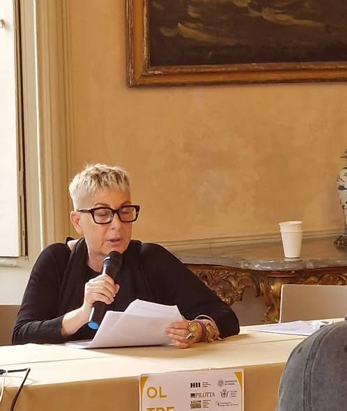
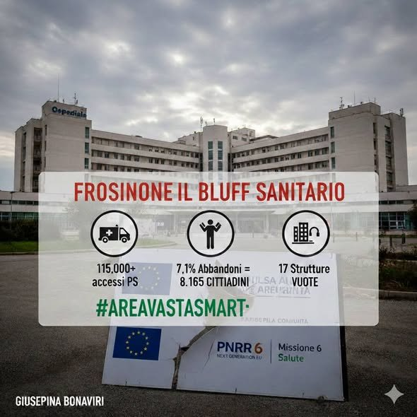
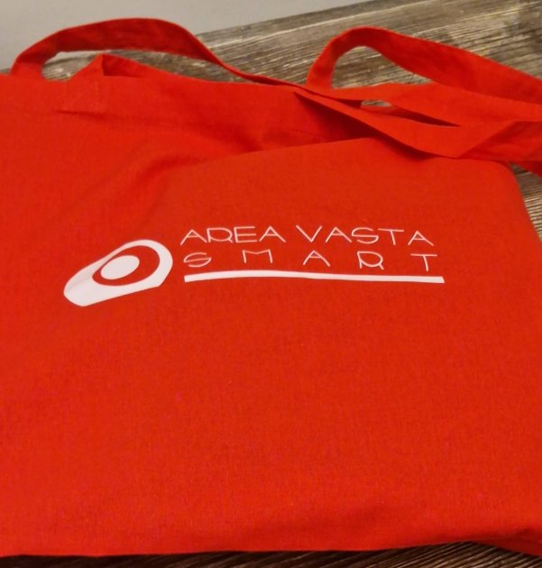
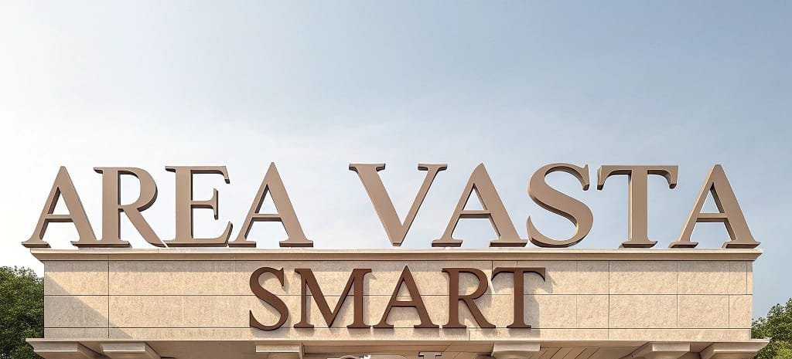

Psicofarmaci e incuria: il prezzo del fallimento politico a Frosinone
Una riflessione sui dati relativi ai minori, sulla tenuta dei servizi territoriali e sulla necessità di riportare prevenzione e accoglienza al centro.
News · idee · documenti
Un archivio unico per le comunicazioni di Area Vasta Smart e gli approfondimenti firmati da Giuseppina Bonaviri.

Una riflessione sui dati relativi ai minori, sulla tenuta dei servizi territoriali e sulla necessità di riportare prevenzione e accoglienza al centro.

Le fragilità dei versanti richiedono monitoraggio, prevenzione e una regia capace di superare gli interventi emergenziali.

Strutture, personale e servizi devono essere letti insieme affinché gli investimenti diventino realmente accessibili ai cittadini.

Una riflessione su prossimità territoriale, mobilità sanitaria, liste d’attesa e accesso alle cure.

Una piattaforma territoriale non è soltanto tecnologia: è un modello condiviso per leggere bisogni, coordinare attori e misurare risultati.
Un tema storico dell’impegno di Giuseppina Bonaviri, tra ricerca scientifica, monitoraggio e tutela delle comunità.
Una riflessione sulle nuove competenze e sulle opportunità che i territori possono costruire per le generazioni future.
Simposi, partenariati e progetti per proteggere il patrimonio come risorsa condivisa e strumento di dialogo.
Nessun contenuto in questa categoria.
Archivio in migrazione
I cinque articoli presenti sul sito AVS sono già consultabili integralmente. I contenuti storici del sito personale e una selezione dei post Facebook pubblici saranno importati progressivamente, preservando autore, data, fotografia e fonte originale. I contenuti personali resteranno chiaramente distinti dalle comunicazioni istituzionali di AVS.